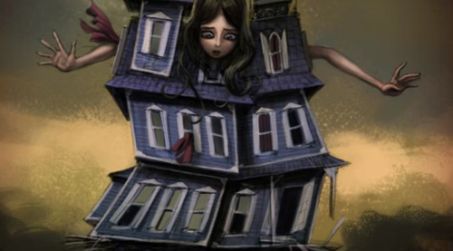

Sat, 09 Apr 2011 19:41:00 · Alice2 · Games
madness return and alice is back have a glance

Madness Return and Alice is back…! Have a glance at the nightmare here.
Sat, 09 Apr 2011 19:41:00 · Alice2 · Games

Madness Return and Alice is back…! Have a glance at the nightmare here.